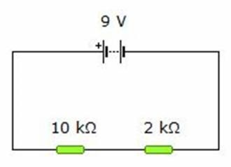
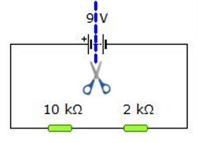
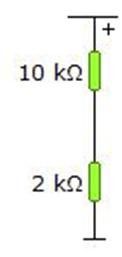
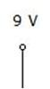
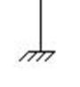
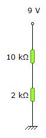

Échale un vistazo al sencillo circuito de la figura de la derecha. Hasta ahora hemos venido utilizando esta forma de representar los circuitos porque nos daba una sensación de comodidad a la hora de visualizar.
No obstante, en Electrónica resulta conveniente utilizar el que se conoce como esquema abierto. Pasar de uno a otro es muy sencillo, como vas a poder comprobar.
Para ello, vamos a hacer un proceso en cuatro pasos:
Paso 1): imagina que coges unas tijeras y “cortas” (mentalmente), el diagrama por la mitad de la pila:

Paso 2) posteriormente, estiras lo que queda:

Como ves, el polo positivo de la pila ha quedado en la parte superior, estando el polo negativo en la parte inferior. Sigamos haciendo cositas:
Paso 3): sustituyes el polo positivo por el nuevo símbolo: 
Paso 4): sustituyes el polo negativo por este otro símbolo: 
A este último lo llamaremos, comúnmente, “masa” o “tierra”, y representa un punto del circuito en el que hay un potencial eléctrico igual a cero. Todo lo que esté conectado a él, evidentemente, tendrá el mismo potencial eléctrico.
Finalmente, nos quedará así:
